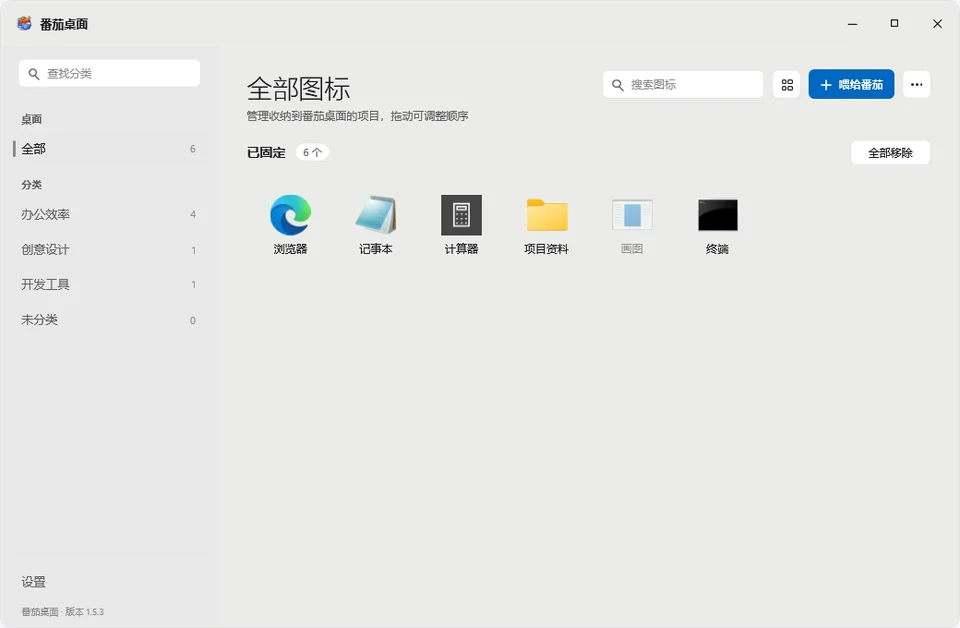
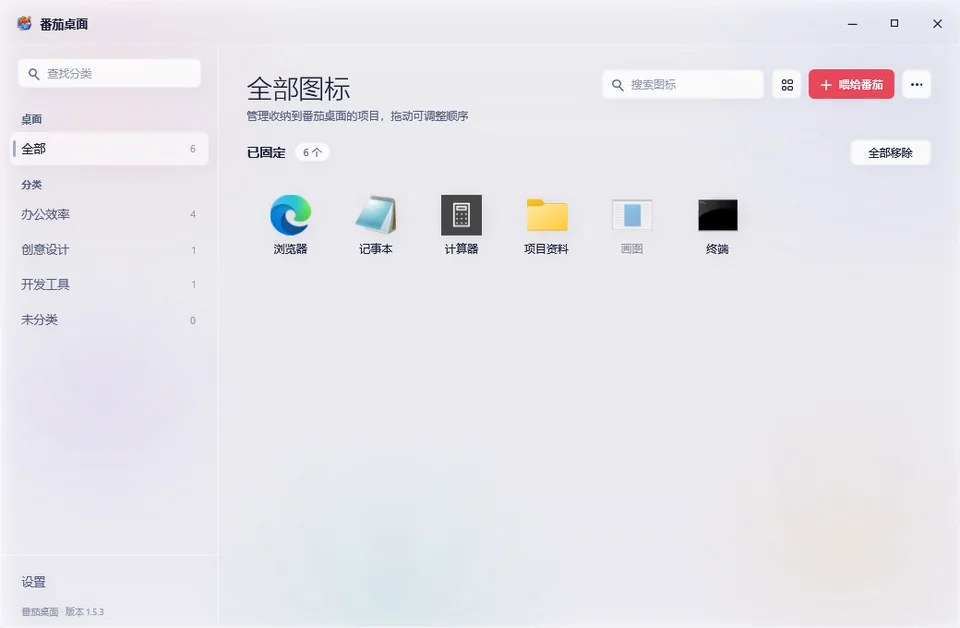

只收你选的
把快捷方式、文件或文件夹拖进面板。也可以点「＋ 喂给番茄」一次多选。
点击图标选择要收纳的项目。
把快捷方式、文件或文件夹拖进面板。也可以点「＋ 喂给番茄」一次多选。
点任务栏的番茄图标，按分类打开。记得名字的话，搜索后按回车就能打开第一个匹配项。
右键「移回桌面」，也可以拖回桌面。同名项目会自动改名，最近 20 步操作可以撤销。
原生配色可以跟随 Windows，也可以固定为浅色或深色。
窗口支持预设缩放和自由调整。调宽窗口可以放下更多列，图标大小保持一致。


Ctrl + Alt + T 打开面板，Esc 收起，Ctrl + Z 撤销上一步。
在左侧导航窗格点「番茄桌面」，直接打开已收纳的项目。
把收纳面板里的文件拖到微信、浏览器或资源管理器，可以发送或复制。
可以。安装时选择 D 盘，安装器会自动创建 D:\TomatoDesktop，把程序、卸载器和 Data 文件夹放在一起。也可以填写完整目录。
直接运行新版安装包覆盖安装。首次启动会迁入旧版收纳数据，并保留原副本。
卸载会保留收纳内容、分类和设置，重装后可以继续使用。想在卸载前拿回文件，可以先在应用里选「移回桌面」。